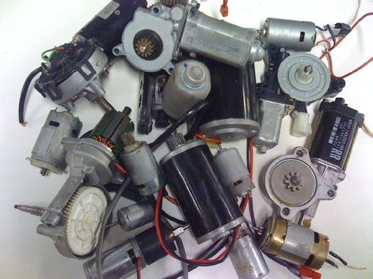

Motors
Building a Motor Curve
Using this data, we can set up our motor curve (shown in figure 4-1). Start with the X axis for torque, which will go from zero (at free speed) to the measured stall torque. Speed can be graphed next, a downwards linear curve moving from the measured free speed on the left, to zero at stall on the right.
|  |
Current also shares a linear relationship with torque. The current measured at free speed should have been close to, but not quite, zero. This reflects the small amount of power required to overcome internal resistance of the motor. A much larger value should have been seen at stall. Draw a straight line between these two values.
Power comes next, and as discussed in the Motor Introduction section, is the product of torque, speed, and a scaling factor. Since torque is zero on one end of the graph, and speed is zero on the other, power will also approach zero at each end. Multiplying the functions for torque and speed together will create an inverted parabola, with a peak at exactly 50% torque.
Finally, efficiency can be graphed. It is calculated using the formula Powerout/Powerin. Plugging in the formula P=IV for power in, multiplying the linear equation for current by the motor’s voltage, and using the previously derived mechanical power formula, efficiency’s curve can be graphed. It will typically appear as a skewed curve, with a peak at roughly 25% torque.
Interpreting a Motor Curve
A motor curve has four critical points on it: Free speed, peak efficiency, peak power, and stall. As has been discussed, free speed and stall are not particularly useful. Even though a motor is physically capable of putting out its free speed, it doesn’t do you any good, because there is no torque, and therefore no power being produced there. And don’t count on a motor to lift a load at it’s stall torque, because it will do so with zero speed. Stall is actually a particularly dangerous position, because even though the motor is operating at 0% efficiency, it is drawing a tremendous amount of current, and therefore, using a huge amount of electrical power. Besides wasting power, this can be dangerous, because this power has to go somewhere. It is burned up in the form of heat, which can easily damage a motor. This is especially hazardous to smaller air cooled motors, which can smoke within seconds of being stalled.
Motors are often designed to operate near either peak power or peak efficiency. At peak efficiency, the greatest percentage of electrical power input to the motor is being converted into usable mechanical power. This is useful in an application where sustaining battery power is a high priority. At peak power, the motor is doing the most mechanical work it is capable of. If a robot is required to lift a specified load, operating the motor at peak power will lift this load the fastest.
Any level of power below peak power can be achieved in two ways: with high speed and low torque, or low speed and high torque. Generally, it is preferable to stay on the high speed, low torque side of the motor curve. This is because of efficiency, and it’s skewed curve. Operating on this side of the curve will generally give you higher efficiency, and will always draw less current. And drawing less current reduces the likelihood of damaging your motor